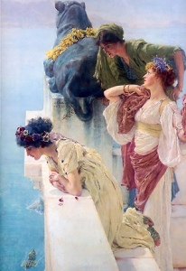

Sacred Texts Atlantis
Buy this Book at Amazon.com
|

A Coign of Vantage, by Lawrence Alma-Tadema [1895] (Public Domain Image) |
The Lost Continentby Cutcliffe Hyne[1900] |
This lively Victorian-era Atlantis story is one of the best of the genre, per Lin Carter, Sprague de Camp, and others. However, IMHO, naming the principal character Deucalion in an Atlantis story is sort of giving away the ending. Hyne's Atlantis is loosely based on Donnelly's conception, a continent in the middle of the Atlantic which disappears under the waves 'in a single day.' Hyne adds interest by setting the story in the last decadent years of Atlantis. The evil queen Phorenice is voracious and cruel, and Deucalion, ostensibly the upholder of duty and tradition, is morally ambiguous. The barbarians are literally at the gate. Dinosaurs, plesiosaurs, and mammoths are depicted as surviving in Atlantis. There is a tragic love triangle, evil sorcery, lots of swordplay, and a rousing naval battle. On one level, it's swashbuckling fun in the vein of Robert E. Howard's Conan. On another level, it's an attempt to explain a whole bunch of mythology by sourcing it from Atlantis, and creating some new myths in the process. This idea has obviously remained in the popular culture.
Charles John Cutcliffe Wright Hyne (b. 1866, d. 1944) was a British writer of serialized magazine fiction at the end of the 19th century. The Lost Continent was first published in the American Pearson's Magazine from July to December 1899. Pearson's was the first to publish the 'speculative fiction' of H.G. Wells and H. Rider Haggard in the US, and the Hyne Atlantis serial was a standout. Hyne went on to publish numerous other works, all in the adventure genre, but The Lost Continent was the high point of his career. The book version was published in 1900, and apparently sold well; this edition is still in demand by collectors. The novel was reprinted in a highly abridged form in the December 1944 issue of Famous Fantastic Mysteries. In 1972 it was finally reprinted unabridged in the Ballantine Books Adult Fantasy line, with an introduction by Lin Carter, and Cutcliffe unfortunately mispelled as Cutliffe on the cover and title page. This etext was scanned from a printing of the first, 1900 edition.
{kind=link}
{kind=link}